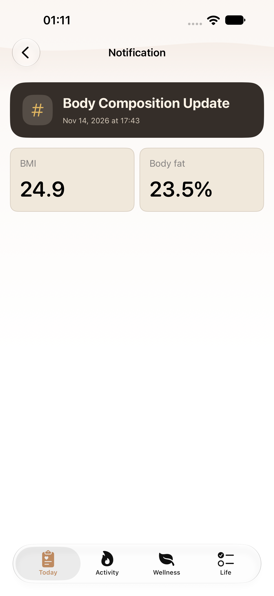
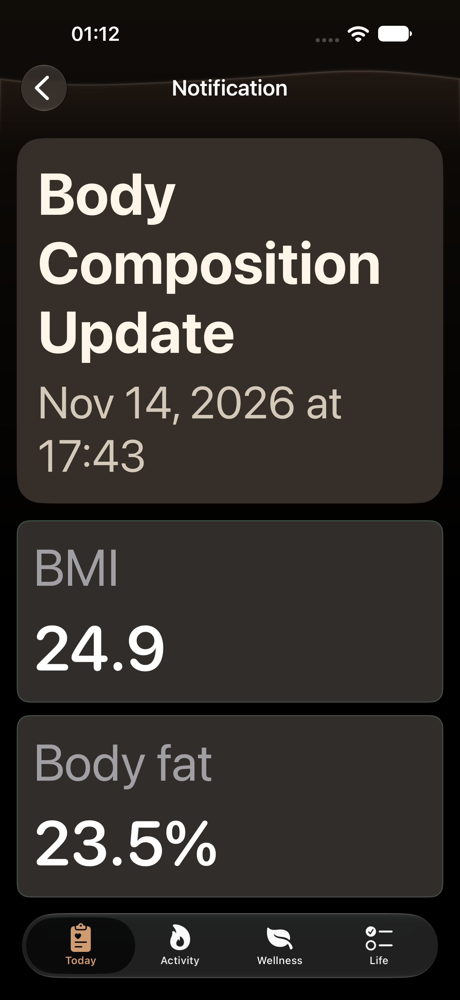
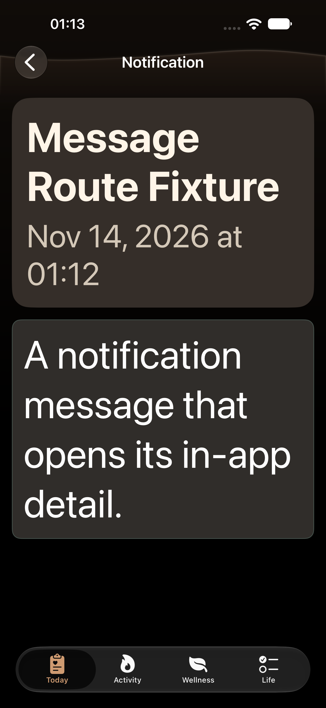
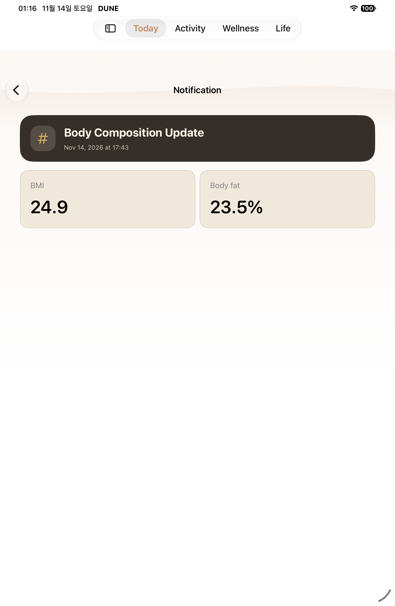
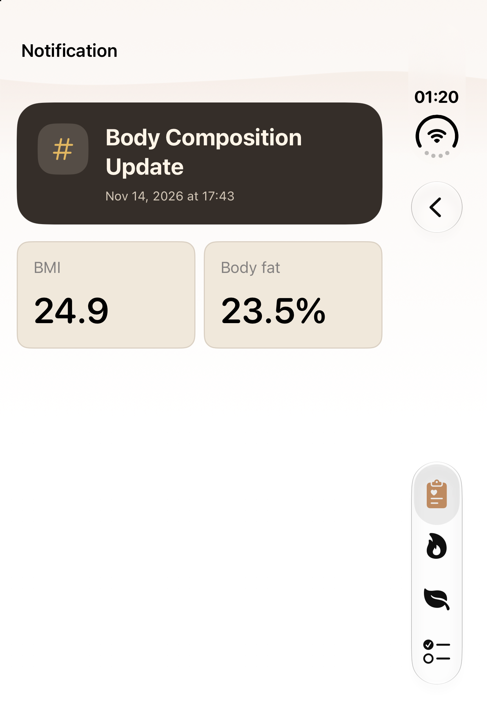

알림 상세 · Watch 유산소
2026-11-14 실제 XCTest PNG와 접근성 계층. 알림 상세는 작은 제목·저장 시각과 체성분 값 카드를 표시하며 최대 글씨에서는 장식 아이콘을 생략합니다.
현재 iPhone 기본·다크 최대 글씨와 iPad 기본 화면을 검증했습니다. Duo 접힘도 검증했습니다. 펼침은 전환 명령 후에도 LCD가 활성 상태로 남아 새 캡처를 얻지 못했습니다. Watch C01·C02의 최종 한 줄 지표 보정은 추가 실행 승인 대기이며 이전 겹침 화면을 완료 캡처로 표시하지 않습니다.
출처와 해시 · 검증 범위
iphone · T12 body composition header and two cards
DesignMapNotificationDetailTests/testBodyCompositionNotificationDetail() · 접근성 계층iphone · T12 body composition dark maximum text body fat DesignMapNotificationDetailTests/testBodyCompositionNotificationDetailDarkMaximumAccessibilitySize() · 접근성 계층iphone · T12 body composition dark maximum text BMI
DesignMapNotificationDetailTests/testBodyCompositionNotificationDetailDarkMaximumAccessibilitySize() · 접근성 계층iphone · T12 body composition dark maximum text BMI DesignMapNotificationDetailTests/testBodyCompositionNotificationDetailDarkMaximumAccessibilitySize() · 접근성 계층iphone · T12 body composition dark maximum text header
DesignMapNotificationDetailTests/testBodyCompositionNotificationDetailDarkMaximumAccessibilitySize() · 접근성 계층iphone · T12 body composition dark maximum text header
DesignMapNotificationDetailTests/testBodyCompositionNotificationDetailDarkMaximumAccessibilitySize() · 접근성 계층iphone · T12 dark maximum text body end
DesignMapNotificationDetailTests/testNotificationMessageDetailDarkMaximumAccessibilitySize() · 접근성 계층iphone · T12 dark maximum text title DesignMapNotificationDetailTests/testNotificationMessageDetailDarkMaximumAccessibilitySize() · 접근성 계층ipad · T12 body composition header and two cards
DesignMapNotificationDetailTests/testNotificationMessageDetailDarkMaximumAccessibilitySize() · 접근성 계층ipad · T12 body composition header and two cards
DesignMapNotificationDetailTests/testBodyCompositionNotificationDetail() · 접근성 계층duo-closed · T12 body composition header and two cards
DesignMapNotificationDetailTests/testBodyCompositionNotificationDetail · 접근성 계층